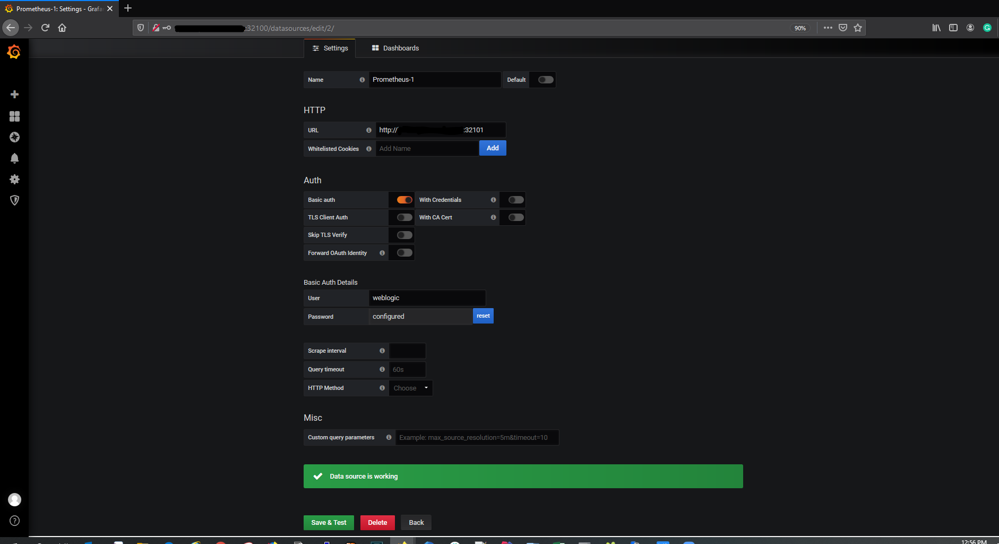

Monitor a WebCenter Portal domain
You can monitor a WebCenter Portal domain using Prometheus and Grafana by exporting the metrics from the domain instance using the WebLogic Monitoring Exporter. This sample shows you how to set up the WebLogic Monitoring Exporter to push the data to Prometheus.
Prerequisites
This document assumes that the Prometheus Operator is deployed on the Kubernetes cluster. If it is not already deployed, follow the steps below for deploying the Prometheus Operator.
Clone the kube-prometheus project
Refer to the compatibility matrix of Kube Prometheus and clone the release version of the kube-prometheus repository according to the Kubernetes version of your cluster.
$ git clone https://github.com/coreos/kube-prometheus.git
#### Label the nodes
Kube-Prometheus requires all the exporter nodes to be labelled with `kubernetes.io/os=linux`. If a node is not labelled, then you must label it using the following command:
$ kubectl label nodes –all kubernetes.io/os=linux
#### Create Prometheus and Grafana resources
Change to the `kube-prometheus` directory and execute the following commands to create the namespace and CRDs:
**NOTE**: Wait for a minute for each command to process.
```bash
$ cd kube-prometheus
$ kubectl create -f manifests/setup
$ until kubectl get servicemonitors --all-namespaces ; do date; sleep 1; echo ""; done
$ kubectl create -f manifests/
Provide external access
To provide external access for Grafana, Prometheus, and Alertmanager, execute the commands below:
$ kubectl patch svc grafana -n monitoring --type=json -p '[{"op": "replace", "path": "/spec/type", "value": "NodePort" },{"op": "replace", "path": "/spec/ports/0/nodePort", "value": 32100 }]'
$ kubectl patch svc prometheus-k8s -n monitoring --type=json -p '[{"op": "replace", "path": "/spec/type", "value": "NodePort" },{"op": "replace", "path": "/spec/ports/0/nodePort", "value": 32101 }]'
$ kubectl patch svc alertmanager-main -n monitoring --type=json -p '[{"op": "replace", "path": "/spec/type", "value": "NodePort" },{"op": "replace", "path": "/spec/ports/0/nodePort", "value": 32102 }]'
NOTE:
32100is the external port for Grafana32101is the external port for Prometheus32102is the external port for Alertmanager
Set Up the WebLogic Monitoring Exporter
Set up the WebLogic Monitoring Exporter to collect WebLogic Server metrics and monitor your WebCenter Portal domain.
Generate the WebLogic Monitoring Exporter Deployment Package
Two packages are required as the listening ports are different for the Administration Server and Managed Servers.
One binary required for the Admin Server (wls-exporter-as.war) and one for Managed Cluster (wls-exporter-ms.war).
Set the required proxies and then run the script getX.X.X.sh to generate two binaries:
$ cd <$WORKDIR>/weblogic-kubernetes-operator/kubernetes/samples/scripts/create-wcp-domain/utils/weblogic-monitoring-exporter
$ sh get1.1.0.sh
Output:
% Total % Received % Xferd Average Speed Time Time Time Current
Dload Upload Total Spent Left Speed
100 607 0 607 0 0 357 0 --:--:-- 0:00:01 --:--:-- 357
100 2016k 100 2016k 0 0 398k 0 0:00:05 0:00:05 --:--:-- 797k
-------------------wls-exporter-ms start-------------------
created /tmp/ci-GNysQzP1kv
Copying completed
/tmp/ci-GNysQzP1kv <$WORKDIR>/weblogic-kubernetes-operator/kubernetes/samples/scripts/create-wcp-domain/utils/weblogic-monitoring-exporter
in temp dir
adding: WEB-INF/weblogic.xml (deflated 66%)
adding: config.yml (deflated 63%)
wls-exporter-ms.war is ready
-------------------wls-exporter-ms end-------------------
-------------------wls-exporter-as start-------------------
Copying completed
in temp dir
adding: WEB-INF/weblogic.xml (deflated 66%)
adding: config.yml (deflated 52%)
wls-exporter-as.war is ready
-------------------wls-exporter-as end-------------------
zip completed
<$WORKDIR>/weblogic-kubernetes-operator/kubernetes/samples/scripts/create-wcp-domain/utils/weblogic-monitoring-exporter
Copy the WAR Files to the WebLogic Domain Home
Copy the wls-exporter-as.war and wls-exporter-ms.war files to the domain home directory in the Administration Server pod.
$ kubectl cp wls-exporter-as.war wcpns/wcp-domain-adminserver:/u01/oracle/user_projects/domains/wcp-domain/
$ kubectl cp wls-exporter-ms.war wcpns/wcp-domain-adminserver:/u01/oracle/user_projects/domains/wcp-domain/
Deploy the WebLogic Monitoring Exporter
Follow these steps to deploy the package in the WebLogic Server instances:
-
On the Administration Server and Managed Servers, deploy the WebLogic Monitoring Exporter (
wls-exporter-ms.war) separately using the Oracle Enterprise Manager.
-
Select the servers to which the Exporter WAR should be deployed:

-
Set the application name. The application name must be different if it is deployed separately in the Administration Server and Managed Servers. Make sure the context-root for both the deployments is
wls-exporter: -
Click Install and start application.
-
Then deploy the WebLogic Monitoring Exporter application (
wls-exporter-ms.war). -
Activate the changes to start the application. If the application is started and the port is exposed, then you can access the WebLogic Monitoring Exporter console using this URL:
http://<server:port>/wls-exporter.
-
Repeat same steps for
wls-exporter-as.war.
Configure Prometheus Operator
Prometheus enables you to collect metrics from the WebLogic Monitoring Exporter. The Prometheus Operator identifies the targets using service discovery. In order to Prometheus be able to discovery and scrape services inside the additional namespaces like wcpns, you must create a service monitor resource pointing to the services in wcpns namespace.
See the following sample service monitor deployment YAML configuration file located at
<$WORKDIR>/weblogic-kubernetes-operator/kubernetes/samples/scripts/create-wcp-domain/utils/weblogic-monitoring-exporter/wls-exporter.yaml.
ServiceMonitor for wls-exporter:
apiVersion: v1
kind: Secret
metadata:
name: basic-auth
namespace: monitoring
data:
password: d2VsY29tZTEK # welcome1 i.e.'WebLogic password'
user: d2VibG9naWM= # weblogic i.e. 'WebLogic username'
type: Opaque
---
apiVersion: monitoring.coreos.com/v1
kind: ServiceMonitor
metadata:
name: wls-exporter-wcp-domain
namespace: monitoring
labels:
k8s-app: wls-exporter
spec:
namespaceSelector:
matchNames:
- wcpns
selector:
matchLabels:
weblogic.domainName: wcp-domain
endpoints:
- basicAuth:
password:
name: basic-auth
key: password
username:
name: basic-auth
key: user
port: default
relabelings:
- action: labelmap
regex: __meta_kubernetes_service_label_(.+)
interval: 10s
honorLabels: true
path: /wls-exporter/metrics
To export metrics using wls-exporter, you need to set basicAuth in Prometheus. So create a Kubernetes Secret with the user name and password that are base64 encoded. This Secret will be used in the ServiceMonitor deployment.
When generating the base64 encoded strings for the user name and password, observe if a new line character is appended in the encoded string. This line character causes an authentication failure. To avoid a new line string, use the following example:
$ echo -n "Welcome1" | base64
V2VsY29tZTE=
In the deployment YAML configuration for wls-exporter shown above, weblogic.domainName: wcp-domain is used as a label under spec.selector.matchLabels, so all the services are selected for the service monitor. If you don’t use this label, you should create separate service monitors for each server–if the server name is used as matching labels in spec.selector.matchLabels. Doing so will require you to relabel the configuration because Prometheus, by default, ignores the labels provided in the wls-exporter.
By default, Prometheus does not store all the labels provided by the target. In the service monitor deployment YAML configuration, you must mention the relabeling configuration (spec.endpoints.relabelings) so that certain labels provided by weblogic-monitoring-exporter (required for the Grafana dashboard) are stored in Prometheus. Do not delete the following section from the configuration YAML file:
relabelings:
- action: labelmap
regex: __meta_kubernetes_service_label_(.+)
Add RoleBinding and Role for the WebLogic Domain Namespace
The RoleBinding is required for Prometheus to access the endpoints provided by the WebLogic Monitoring Exporter. You need to add RoleBinding for the namespace under which the WebLogic Servers pods are running in the Kubernetes cluster. Edit the kube-prometheus/manifests/prometheus-roleBindingSpecificNamespaces.yaml file in the Prometheus Operator deployment manifests and add the RoleBinding for the namespace (wcpns) similar to the following example:
- apiVersion: rbac.authorization.k8s.io/v1
kind: RoleBinding
metadata:
name: prometheus-k8s
namespace: wcpns
roleRef:
apiGroup: rbac.authorization.k8s.io
kind: Role
name: prometheus-k8s
subjects:
- kind: ServiceAccount
name: prometheus-k8s
namespace: monitoring
In the Prometheus Operator deployment manifests located at kube-prometheus/manifests/prometheus-roleSpecificNamespaces.yaml, add the Role for the namespace wcpns under which the WebLogic Servers pods are running in the Kubernetes cluster. See the following example:
- apiVersion: rbac.authorization.k8s.io/v1
kind: Role
metadata:
name: prometheus-k8s
namespace: wcpns
rules:
- apiGroups:
- ""
resources:
- services
- endpoints
- pods
verbs:
- get
- list
- watch
Then apply prometheus-roleBindingSpecificNamespaces.yaml and prometheus-roleSpecificNamespaces.yaml for the RoleBinding and Role to take effect in the cluster.
$ kubectl apply -f kube-prometheus/manifests/prometheus-roleBindingSpecificNamespaces.yaml
$ kubectl apply -f kube-prometheus/manifests/prometheus-roleSpecificNamespaces.yaml
Deploy the Service Monitor
To deploy the service monitor, use the above wls-exporter.yaml deployment YAML and run the following command:
$ kubectl create -f <$WORKDIR>/weblogic-kubernetes-operator/kubernetes/samples/scripts/create-wcp-domain/utils/weblogic-monitoring-exporter/wls-exporter.yaml
Enable Prometheus to Discover the Service
After deploying the service monitor, Prometheus should be able to discover wls-exporter and export metrics.
You can access the Prometheus dashboard at http://mycompany.com:32101/.
Deploy Grafana Dashboard
To view the domain metrics, deploy the Grafana dashboard provided in the WebLogic Monitoring Exporter.
You can access the Grafana dashboard at http://mycompany.com:32100/.
-
Log in to Grafana dashboard with
admin/admin. -
Go to Settings, then select DataSources, and then Add Data Source.
HTTP URL: Prometheus URL
http://mycompany.com:32101/Auth: Enable Basic Auth
Basic Auth Details: Weblogic credentials provided in the step Configure Prometheus Operator

-
Download the
weblogic_dashboard.jsonfile from here. -
Click Add and then Import. Paste the modified JSON in the Paste JSON block, and then load it.

This displays the WebLogic Server Dashboard.